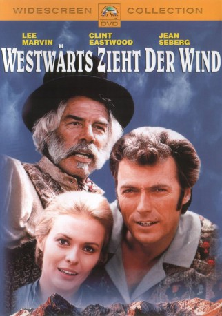

#2985 Westwärts zieht der Wind
Alternativ: Paint Your Wagon
Auszeichnungen: für 1 Oscars nominiert
 
 IMDB-Wertung: 6.7 / 10
IMDB-Wertung: 6.7 / 10  Metascore: 0
Metascore: 0 
Unverhofft rettet der Goldgräber Ben Rumson (Lee Marvin) dem Farmer "Pardner" (Clint Eastwood) das Leben. Der Grundstein für eine wunderbare Männerfreundschaft ist gelegt. Doch dann gibt's ein Problem - und das heißt Elizabeth (Jean Seberg). Denn beide sind schwer hinter der jungen Frau her...
Jahr: 1969
Dauer: 157 Minuten
FSK: 16
Land: USA Studio: Paramount PicturesTonspuren:
Untertitel:
Auflösung: SD (712x304) Größe: 1617 MB
Genre: Drama, Komödie, Western, Liebe, Musical
Regisseur: Joshua Logan
Drehbuch: Alan Jay Lerner, Alan Jay Lerner, Paddy Chayefsky
Soundtrack:
Darsteller:
 Lee Marvin als Ben Rumson
Lee Marvin als Ben Rumson Clint Eastwood als Pardner
Clint Eastwood als Pardner Jean Seberg als Elizabeth
Jean Seberg als Elizabeth Harve Presnell als Rotten Luck Willie
Harve Presnell als Rotten Luck Willie Ray Walston als Mad Jack Duncan
Ray Walston als Mad Jack Duncan- Tom Ligon als Horton Fenty
 Robert Easton als Atwell
Robert Easton als Atwell- H.B. Haggerty als Steve Bull
 Eddie Little Sky als Indian
Eddie Little Sky als Indian Roy Jenson als Hennessey
Roy Jenson als Hennessey- Cal Bartlett als Miner , uncredited
 Joe Brooks als Miner , uncredited
Joe Brooks als Miner , uncredited Richard Farnsworth als Miner , uncredited
Richard Farnsworth als Miner , uncredited- Daniel Keough als Pioneer , uncredited
- John McEuen als Member of The Nitty Gritty Dirt Band , uncredited
- Lisa Todd als American Bawd , uncredited
- Alan Dexter als Parson
 William O'Connell als Horace Tabor
William O'Connell als Horace Tabor- Benny Baker als Haywood Holbrook
 Alan Baxter als Mr. Fenty
Alan Baxter als Mr. Fenty- Paula Trueman als Mrs. Fenty
- Geoffrey Norman als Foster
- Terry Jenkins als Joe Mooney
- Karl Bruck als Schermerhorn
 John Mitchum als Jacob Woodling
John Mitchum als Jacob Woodling- Sue Casey als Sarah Woodling
 Harvey Parry als Higgins
Harvey Parry als Higgins- H.W. Gim als Wong
- William Mims als Frock-coated man
- Patrick Hawley als Clendennon
- Nitty Gritty Dirt Band als
- Ralph Barr als Member of The Nitty Gritty Dirt Band , uncredited
- Boyd Cabeen als Miner , uncredited
- Tony Colti als Miner , uncredited
- Danielle Cotet als French Bawd , uncredited
- Chris Darrow als Member of The Nitty Gritty Dirt Band , uncredited
- Walt Davis als Man , uncredited
- Dolores Domasin als Princess Hummingbird, Parson's Wife , uncredited
- Tony Epper als Miner , uncredited
- Henry A. Escalante als Miner , uncredited
- Jimmie Fadden als Member of The Nitty Gritty Dirt Band , uncredited
- George Fargo als Miner , uncredited
- Lee Faulkner als Miner , uncredited
- Amber Flower als Larua Sue Fenty , uncredited
- Barbara Gabrielle als French Bawd , uncredited
- Tony Giorgio als Card Player , uncredited
- James Goodnow als Miner , uncredited
- Jeff Hanna als Member of The Nitty Gritty Dirt Band , uncredited
- Paul Harper als Miner , uncredited
- Lars Hensen als Miner , uncredited
Datei: X:\HD-Western-1960-1979\Westwärts zieht der Wind (1969, FSK16, 712x304).avi seit 13.01.2016
Festplatte: HD Eastern+Western
 Es gibt insgesamt 110 Filme in der Gruppe 'HD-Western-1960-1979'
Es gibt insgesamt 110 Filme in der Gruppe 'HD-Western-1960-1979'